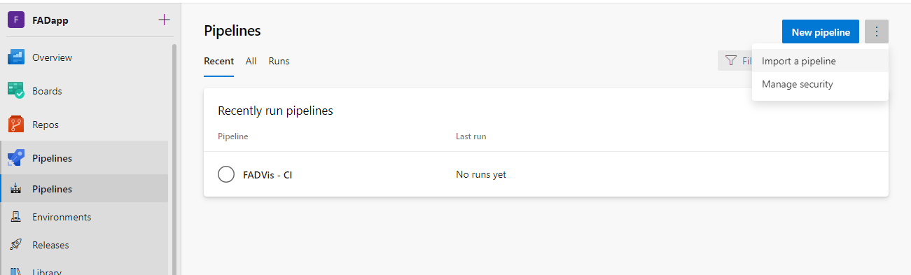
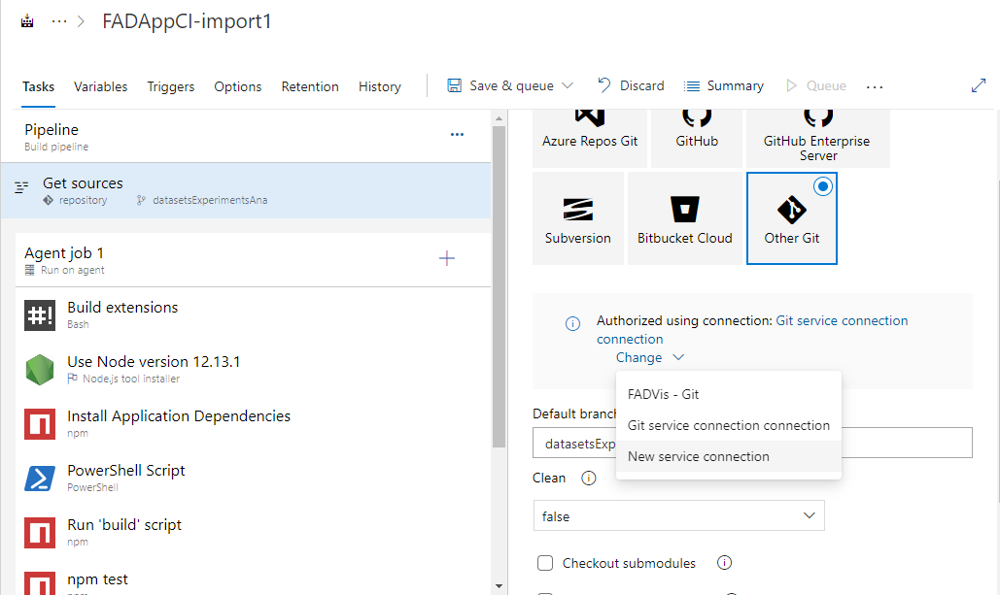
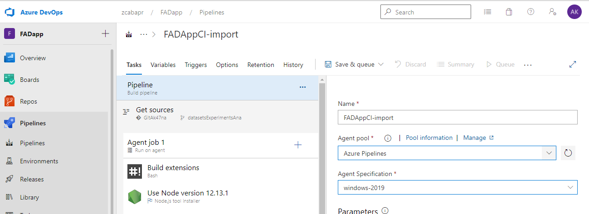
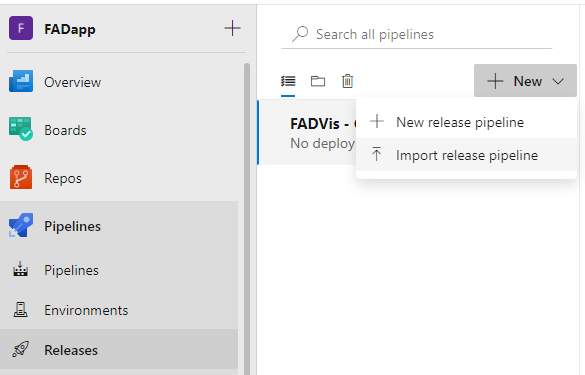
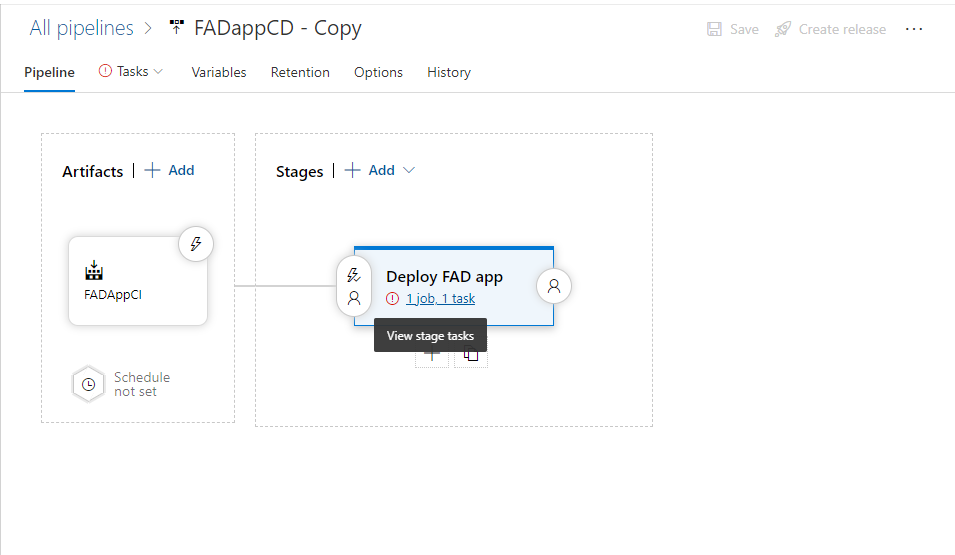
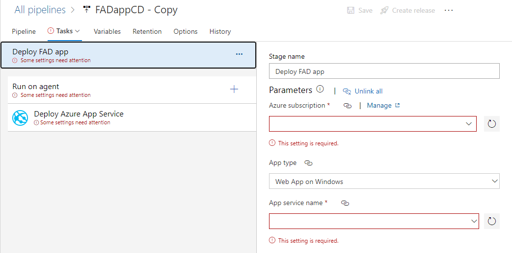
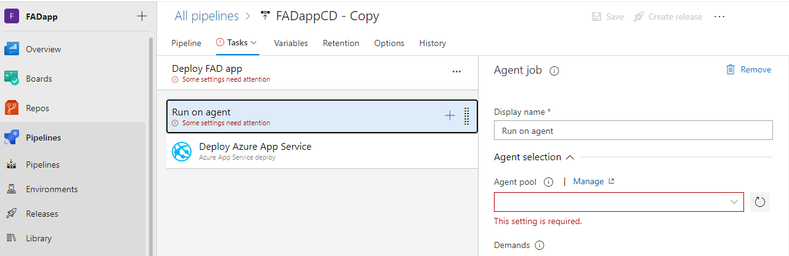

Clone the GitHub Repository
First clone the GitHub repository from:
https://github.com/Project15Invictus/MicrosoftProject15_Invictus.git
DownloadData deployment
(Users can choose to view the deployment by finding Deployment of UrlToAzureStorage.pdf under the doc folder after the code is cloned).
Once the GitHub repository is cloned, navigate to the same folder of a file called UrlToAzureStorage.py. Add a .env file, inside this file write (AZURE_CONNECTION_STRING = "your_connection_string" AZURE_CONTAINER_NAME = "your_container_name"). Then users are set to use the code to download data from given urls to the azure blob storage.
Azure Function deployment
(Users can choose to view the deployment by finding Deployment of Azure Function.pdf under the doc folder after the code is cloned).
Open the EventGridTriggerAzureFunction folder, under it create a local.settings.json file. Inside the file, add credentials like this:

Right click on the folder (EventGridTriggerAzureFunction) and select Deploy to Function App. Select the same subscription as users' storage account -> Create new Function App in Azure (Advanced) -> enter a unique name for the azure function -> select Python 3.8 -> Select Consumption -> Select the resource group that has users' storage account -> Select the storage account -> Create new Application Insights resource
After deployment is finished. Go to Azure portal and find the azure function just created. Select Configuration under Settings. Add the application settings as local.settings.json to azure service. Create an Event Grid System Topic in Azure.
Find storage account, select Events -> +Event Subscription. Give a name of subscription, Event Schema as Event Grid Schema. Select storage account and the Event Grid System Topic created. Select Event Types as Blob Created. Select Endpoint Types as Azure Function, and select the Endpoint.
Then azure function is successfully deployed.
Use the exported CI/CD pipelines
Once the gitHub repository is cloned, the pwa can either be deployed from Visual Studio Code, or using our build and release pipelines exported as JSON. For both files, replace the occurrences of "YOUR-PROJECT-ID" with the id of your Azure DevOps your project id, and "YOUR-ACCOUNT-NAME" with the username of your Azure account. To use the pipelines, navigate to the Builds or Releases page in your Azure DevOps project.
Configure the build pipeline
For the build pipeline, navigate to Builds, choose +New and select the corresponding import pipeline option.
Select the FADAppCI.json file from pwa/FADapp/CICD_pipelines. After the import is complete, you will be shown the new pipeline that is created. Exporting a pipeline strips any project specific data like agent pools and service connections, thus this settings should be configured.
First, in order to connect to the GitHub repository, you need to authorize a service connection, by selecting it from the Authorized using connection: button under the "Get sources tab". Similarly, to create a new service connection, click on New Service Connection, as shown in the image below.
For the Agent pool, select "Azure Pipelines" and for the Agent Service, select the "windows 2019" machine.
For changing the API key of the Azure Maps account, go to the pipeline Variables tab, and change the value for "AzureMapsAPIKey" to your key value.
Now you can run the build pipeline as shown below.
Configure the release pipeline
For the release pipeline, navigate to Releases, choose +New and select the corresponding import pipeline option.
Select the FADAppCD.json file from pwa/FADapp/CICD_pipelines. After the import is complete, you will be shown the new pipeline that is created. To configure the deployment, click on the "Deploy FAD app" stage.
Similarly to the previous pipeline, the release needs configurations. More specifically, you will be prompted to select your Azure Subscription, and the name of the Azure App Service you want your app to be deployed to.
As for the build pipeline, for the Agent pool, select "Azure Pipelines" and for the Agent Service, select the "windows 2019" machine.
